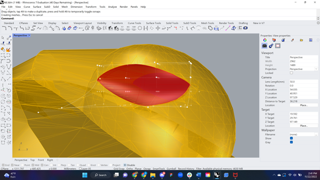
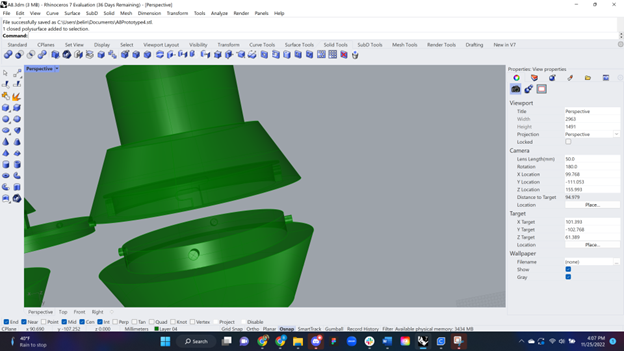
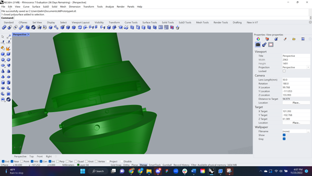
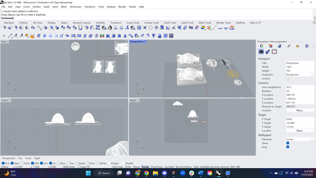

Belinda Bleeker's Assignment 8!

For my final project I have made a prop for a cosplay of Lilith Clawthorne from The Owl House. Following my intial plan I started with editing the .stl file I got from Thingiverse. I started with the eyes. First I hollowed out the .stl where the eyes were by creating a curve around the socket, extruding the curve, extending it with "Scale1D" and then using "MeshBooleanDifference" to cut it away.
The next step was to create the eye itself. I used a section from the piece I used to cut the mesh. I used the "CageEdit" tool to edit the piece so it was curved. To select the specific piece I used the "Bounding Box" option. From there I edited points until the solid was shaped as I liked. Next, I used the "Mirror" tool to create a new piece for the other side. Lastly, I created a box to go around the eye pieces I would use to create a mold.


The second part of the editing was the bottom piece. I used "MeshBooleanDifference" to delete the original bottom and created a circle the same width of the bottom. Next I used the solid tools to create two halfs that would fit together to create the final piece that would lock together; one connected to the eagle and one to pressfit into the staff.
To create the lock I followed this design. I created cylinders to extrude the top and cut away from the bottom. I then create a cylinder on the side of the extruded piece and used "PolarArray" to equally distribute 4 along the curve.\ I chamfered the bottom with "ChamferHandle" with .5 so it would fit better. I then used that cylinder to guide the cut out I made for the bottom piece. The bottom piece was a bit complicated, first I cut out the piece from the top slightly bigger than the extrusion of the top piece. Next I created a tube that had the cut out design for the nobs to lock into and joined that to the solid. Lastly, I created a cylinder the width of the inside of my pvc pipe to pressfit into it.
 

The next step was to print the pieces. I first printed the locking pieces separate to test the lock. I first prited them with the locking side up, this took 2 hours 21 minutes and 16 seconds to print.' These pieces unfortunately came out very rough and with slight issues but I was able to test the print fitting in the pipe.


The next time I tested them I flipped them and changed the settings, as the printer kept having issues... again. I made a couple of changes to the settings: Layer Height .2mm, Wall Line Count 3, Printing Temperature 200 C, Build Plate Temperature 0. I ended up turning off the heating which was apparently the issue with adhesion, It just wouldn't stay otherwise. In the end the pieces worked and took 2 hours 43 minutes and 45 seconds.
Next I printed the topper (which had the lock piece connected) It took 1 day 3 hours 14 minutes and 56 seconds. The beak ended up not printing properly and the print fell breaking the tip of one of the wings. To fix this I printed pieces of the topper where it failed/broke. It tooke 34 minutes and 57 seconds. Then I sanded the topper and glued them on.
Next I printed the pieces for the bottom lock (1 hour 18 minutes and 40 seconds) and eyes (1 hour 36 minutes and 32 seconds). I was able to press fit the bottom piece with the PVC pipe. There was also some sanding done on the lock so it would work. However, the lock didn't last after trying it 2-3 times so I ended up gluing it instead.


I then created the molds for the eye pieces using the Oomoo. I followed this method. to create the molds. I let them sit for 6 hours to finish curing before I removed the eye pieces.


Next, casting the resin. I mixed the parts with the opaque dye for about 5 minutes and then set it in a vacuum chamber to remove bubbles before pouring it in the mold. It cured over 12 hours but I didn't touch them for a little after as I was away in the mountains during that time.



Next I tried smoothing the print with XTC-3D but it didn't really do much. After that dried I had to sand the Resin molds slightly so they would pressfit, I'm really happy with the result.
Next I was supposed to spray paint, but I learned I can't in my apartment and I couldn't find another space I could do it. I also was behind on finishing the part due to my printer being difficult again so I didn't have enough time to do an acrylic paint if I wanted to. This is the final result.
P Topper STL file Tip Fix STL file Beak Fix STL file Eye 1 STL file Eye 2 STL file Eye Box STL file Bottom Lock STL file
Acknowledgements
My s/o (Peter) with fixing the 3D printer.
And my friend Dana for helping me put this site together